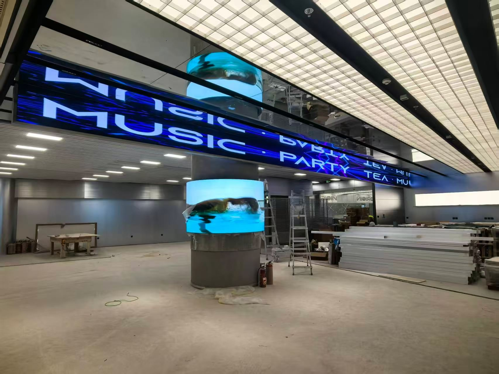
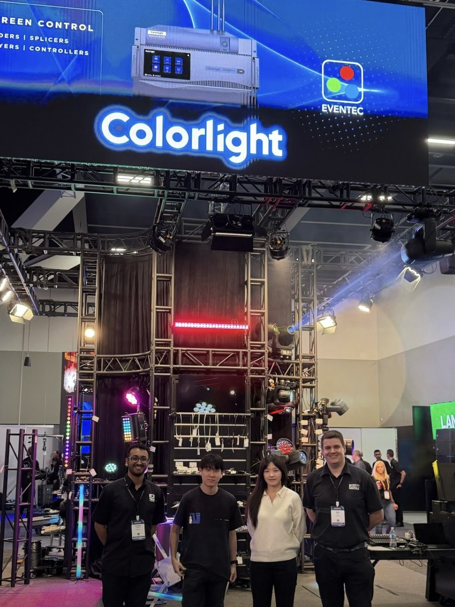

By David
What must a control room led wall deliver? A control room led wall is the large display that operators watch around the clock, so it must run 24/7 without losing the picture, stay cool and quiet, hold a steady brightness for long viewing, and fail over cleanly when a signal or a power path drops. This 2026 guide explains what buyers, integrators, and operations managers should specify for a control room video wall that must keep working.
A control room is different from a lobby or a retail window. The display is a working instrument, not a sign. Operators sit in front of it for eight or twelve hours at a time, reading data, maps, camera feeds, and status boards. The wall must stay readable, stay cool, and stay on. Anything less interrupts the work it exists to support.
This control room led wall operations guide is written for system integrators, control room project owners, and the operations managers who keep the wall running for years. It covers the redundancy a control room usually demands, the cooling and noise, the brightness for long viewing, the signal chain and its failover, and the operating cost over the life of the wall.
A control room led wall must deliver three things that a normal display does not have to: uninterrupted operation, comfortable long-duration viewing, and predictable maintenance. The wall runs whenever the operation runs, which for many sites is every hour of every day. The specification should be written around those three demands, not around the size or the price alone.
The content is also different. A control room video wall shows fine detail: a table of numbers, a map with labels, a camera feed with text overlays. The pixel pitch must be fine enough that the smallest element is readable from the operator's seat, and the brightness must be low enough that a person can watch it for a whole shift without strain.
| Requirement | Why It Matters | What to Ask |
|---|---|---|
| Uninterrupted operation | The operation cannot stop | Redundant power and signal paths |
| Long viewing comfort | Operators watch for hours | Low, stable brightness and fine pitch |
| Low noise | People work in the same room | Fanless or low-noise cooling |
| Predictable service | A fault must not last hours | Front access and on-site spares |
| Controlled cost | The wall runs 24/7 for years | Power draw and repair cost |
In a control room, redundancy is not a luxury. The wall carries information that the operation depends on, so a single failed power supply or a single failed signal cable should not blank the screen. Control rooms commonly require redundant power paths, redundant signal paths, and a spare control path, so that any one failure degrades the wall rather than stops it.
This is a question of what the project requires, not what a given supplier ships by default. The buyer should decide how much redundancy the operation truly needs, then write it into the specification and confirm each supplier can meet it. A wall that looks right but has no backup path is a wall that fails the first time a supply or a cable gives out.
Two kinds of redundancy matter in a control room led wall: power redundancy and signal redundancy. Power redundancy means the wall draws from two feeds, so losing one leaves the other. Signal redundancy means the content reaches the wall by two routes, so losing one cable does not lose the image. The two together are what keep a command center led display alive through a single fault.
A third question is how the wall behaves when something fails. Some systems show a warning and a partial image; others go dark. For a control room, a graceful failure, where the operator sees a warning and the rest of the wall keeps working, is usually far better than a full blackout. The buyer should ask how the wall fails, not only whether it can fail less often.
The buyer should also ask how the redundant paths are monitored. A backup path that nobody tests is a backup that may not work when it is needed. A good specification asks for status monitoring and a periodic failover test, so the redundancy is proven and not assumed. This is a process point, but it is part of the wall's reliability.
A 24/7 led wall runs hot because it never stops. The heat comes from the LEDs and the power supplies, and it must be carried away, or the wall runs hotter than its design allows and its life shortens. Cooling is not an afterthought in a control room; it is a design constraint, because the room is occupied and the wall is never switched off.
Noise is the second constraint. In a control room, people work beside the wall, often for a full shift. A wall that needs loud fans becomes a source of fatigue and distraction. Fanless cooling, where the design allows it, or low-noise fans with a quiet curve, keeps the room workable. The buyer should treat the noise level as a specification item, not a detail.
The room's own cooling also matters. A control room led wall adds heat to the space, and the air conditioning must account for it. The buyer should give the display's heat load to the mechanical designer, so the room is sized for the wall. A room that is under-cooled because the wall was not counted runs warm and shortens the life of everything inside it.
A control room is usually a dim space, because operators read screens for long periods. A wall that is bright enough for a daylight lobby is far too bright for a dim control room. High brightness in a dark room causes glare and eye strain, and it reduces the contrast between the content and the background. The brightness should be set for the room, not for a shop window.
The right brightness for a control room led wall is usually modest, and it should be stable and adjustable. A brightness sensor or a scheduled dimming curve lets the wall match the room through the day and the night. When the room darkens in the evening, the wall should dim with it, so the operators stay comfortable and the wall does not become the brightest thing in the room.
Long viewing also puts a premium on the panel itself. A monitor-grade panel with even brightness across the surface and a fine pixel pitch keeps text sharp and holds colour stability over hours. This is where a fine-pitch COB panel earns its place: the surface is smooth, the contrast is stable, and the text stays legible for a full shift. Buyers evaluating fine-pitch options can compare panels such as the COB CV Pro series against their viewing distance and content.
| Room Condition | Brightness Approach | Reason |
|---|---|---|
| Dim control room | Low, adjustable brightness | Avoid glare and eye strain |
| Lit operations floor | Moderate brightness | Stay readable against the room |
| Glass-fronted room | Higher, sensor-driven | Compete with daylight |
| Night shift | Dimmed to the room | Comfort over long sessions |
In a control room the pixel pitch is set by the closest viewer, not by the farthest. An operator sitting at the desk in front of the wall is measured in metres, sometimes less, and at that distance a coarse pitch shows its structure and undermines the fine detail the room exists to read. Buying to the room's length rather than to its front row is the most common pitch error in a control room, and it is an expensive one because a finer pitch than necessary spends money across the whole wall.
Viewing angle follows the desk layout rather than the display. Where operators sit across a wide arc, the wall is seen from the side by the outermost positions, and the picture has to hold up across that whole width. A wall specified on its on-axis performance can fall away at the edges, so the horizontal viewing angle should be matched to how the desks are actually arranged, not assumed from a centre-seat view.
Where the layout wraps around the room rather than facing it, a curved or segmented wall can keep the screen at a consistent distance and angle from more seats than a single flat plane allows. The choice between flat and curved belongs to the room geometry and the seating plan, and it should be settled while the furniture layout is still open.
Reflected light is the quiet problem in a control room. Glass partitions, bright walls and desk lamps all produce reflections on a glossy surface, and any reflection lifts the black level and washes out the dark content operators rely on. A matte, high-contrast surface reflects far less, and where a wall faces glazing or a lit wall, that finish matters more than a marginal brightness advantage.
Colour in a control room is a question of accuracy rather than impact. Operators compare a screen against source material, maps and other displays, so the wall has to reproduce colour consistently rather than vividly. That means the whole surface should be calibrated as one, with no section drifting warmer or cooler than its neighbour, and the calibration has to be repeatable over the life of the installation so it does not decay into visible patches.
Comfort over a long shift comes from the combination of these factors rather than any one of them. A brightness matched to the room, a matte surface that does not reflect, a stable and flicker-free image, and a pitch fine enough for the desk distance together reduce fatigue. None of them is a luxury feature in a room where operators watch the same wall for a full shift, and all of them are cheaper to specify than to retrofit.
| Specification point | What sets it |
|---|---|
| Pixel pitch | The distance from the nearest operator position, not the back of the room |
| Viewing angle | The widest seat in the desk layout |
| Surface finish | Reflections from glazing, walls and desk lighting |
| Colour | Accuracy and consistency across the whole surface, with repeatable calibration |
| Refresh and uniformity | Flicker-free viewing over a full shift |
The signal chain is the path the content takes from the source to the wall: sources, a processor or switcher, a sending card, and the receiving cards in the cabinets. In a control room, the chain carries many sources, and the operator switches between them. A break anywhere in the chain can blank the wall, so the chain is where failover matters most.
Failover in the signal chain means the wall can keep showing content when one link drops. This can be done with redundant cabling, a standby processor, or a receiving design that keeps the last good frame on screen. The buyer should ask what happens to the image when a source, a processor, or a cable fails, and choose the answer that suits the operation.
The processor is often the real risk, because it is a single point where many sources meet. A spare processor, kept configured and ready to swap in, is a practical form of redundancy for many control rooms. The buyer should confirm the swap is fast and does not need a specialist on site, because a fault on a night shift must be handled by the people who are there.
Failover should be tested, not assumed. The buyer should ask the integrator to demonstrate a failover during commissioning: pull a signal cable, drop a power feed, and watch the wall. What the operators see in that test tells them what they will see in a real fault. A failover that works on paper but not in the room is a failover that will fail at the worst moment.
The result of the test should also be documented. The operations team should know which feed to switch, which card to swap, and who to call. A simple one-page failover procedure, kept beside the wall, turns a scary fault into a routine task. Documentation is part of the redundancy, because redundancy only helps if people know how to use it.
A control room led wall should draw from a stable supply, and where the operation allows, from more than one path. The power supplies are the parts that carry the load, and a supply that fails takes its section of the wall with it. The buyer should ask how many supplies feed the wall, how they are distributed, and what happens when one fails.
Surge protection matters too, because a control room shares its power with other equipment and is exposed to the same surges and sags. A surge can damage the wall's supplies even if it does not stop the room. The buyer should specify surge protection at the feed, so the wall is protected from the electrical noise that a busy building produces.
The electrical plan should treat the wall as an item in its own right, with its own circuit, its own protection, and its own backup where the operation needs it. A wall that shares a circuit with a heavy load it does not control is a wall that inherits problems from that load. Clean, dedicated power is one of the cheapest forms of reliability a control room can buy.
A wall that runs every hour of the day draws power every hour of the day, so the operating cost is not a footnote; over a few years it can rival the purchase price. The power draw depends on the brightness, the content, and the efficiency of the supplies. Running a control room led wall at a sensible brightness for the room, rather than at full power, lowers the bill and the heat at the same time.
Maintenance is the other half of the operating cost. A wall with front access and on-site spares is repaired in minutes; a wall that needs scaffolding or a specialist visit is repaired in days. The cost of downtime, especially in a control room, is often larger than the cost of the parts. The buyer should weigh the service design as carefully as the purchase price.
| Cost Area | Main Driver | How to Reduce It |
|---|---|---|
| Electricity | Brightness and duty cycle | Set brightness for the room |
| Cooling | Heat rejected into the room | Efficient panels, airflow design |
| Service labour | Access and spares | Front access, on-site spares |
| Downtime | Time to repair | Fast swap, clear procedure |
| Replacement | Part life | Quality supplies and panels |
The lifespan of the wall is part of its cost, because a wall that lasts longer costs less per year. Buyers who want to understand how the life of a display is set by its parts can read the LED display lifespan guide, which explains how the LEDs, the supplies, and the operating conditions combine to set the service life of a wall.
In a control room, serviceability decides how long a fault lasts. The wall should be reachable from the front, so a module or a card can be replaced from the room side without moving the wall or closing the operation. Front access, for a wall that runs continuously, is close to essential, because the wall cannot be taken down while the operation is live.
Spares should be held on site or nearby. The most common spares for a control room led wall are modules, receiving cards, power supplies, and a sending card. Keeping one of each on the shelf turns a multi-day outage into a short repair. The buyer should ask for the recommended spares list and the cost of holding it, because the spares are part of the wall's reliability.
It also helps to know which module and which card sit where. A simple map of the wall, with its cabinet positions marked, lets an operator point to the failed part and change it. A wall that is documented is a wall that is repaired fast. This is a small piece of work that pays back the first time something fails.
The panel choice follows from the viewing distance and the content. A control room with operators seated a few metres from the wall needs a fine pixel pitch, so text and fine detail stay sharp. A larger room, where the wall is seen from further back, can use a coarser pitch. The pitch should be chosen for the closest seat, which is the hardest viewing position.
The panel type also matters for the room. A COB panel, where the LEDs are sealed behind a smooth surface, resists dust and touching and holds a stable image, which suits a control room where the wall is near people and runs for years. Buyers comparing indoor fine-pitch options can look at the M-Pro indoor series alongside other panels to match pitch, brightness, and service needs to the room.
Asia Vision supports SMD, GOB, and COB panel types and ships from Shenzhen, which lets a project pick the surface that fits the control room rather than accept whatever a single line offers. Buyers who want to compare the panel families side by side can review the range on the product range page before writing the specification.
The common mistakes in a control room led wall are a wall that is too bright for the room, a wall with no redundant path, a cooling plan that ignores the room, and a service design that needs the wall to be closed. Each of these turns a working instrument into a source of problems, and each is avoidable at the specification stage.
Another mistake is choosing the pitch for the budget rather than the closest seat, which leaves the operators unable to read the fine content the wall was bought for. A third is forgetting the operating cost, so the wall runs at full brightness day and night and the running bill surprises the owner. The remedy is to plan the wall for the way a control room actually works.
A control room led wall specification should state the pixel pitch for the closest seat, the brightness for the room, the redundancy required for power and signal, the cooling and noise limits, the service access, the spares, and the monitoring. It should also state the operating cost expectation and the failover procedure. Each point answers a question a control room will raise in its first year.
The specification should be written with the operations team, not only the buyer, because the operators are the people who will live with the wall. Their input on brightness, content, and access is worth more than a catalogue figure. A wall designed with the operators works better, because it is built for the way the room is used.
The control room led wall is a working display that must run 24/7 without losing the picture, and its specification should serve that goal. Plan the redundancy, the cooling, the brightness, the signal failover, and the operating cost together, and the wall will do its job for years rather than fail when the operation can least afford it.
Buyers who specify the wall for the control room, and not for a shop window or a lobby, get a display the operators can watch for a full shift and trust through a fault. A supplier who can customise cabinets, run ageing tests, and support the wall after delivery helps keep it running. To discuss a control room project and its specification, contact the Asia Vision team.

For this requirement our range covers it directly: the R-PRO series (indoor fixed cabinets with a 640x480mm module), the E-PRO series (high-end rental with a COB and SMD dual platform), and the COB EH-PRO series (premium IP65 COB outdoor).
Tell us your room, viewing distance, and duty cycle, and we will help specify the pitch, brightness, cooling, and redundancy for your control room led wall.
Request Control Room SpecChat on WhatsApp